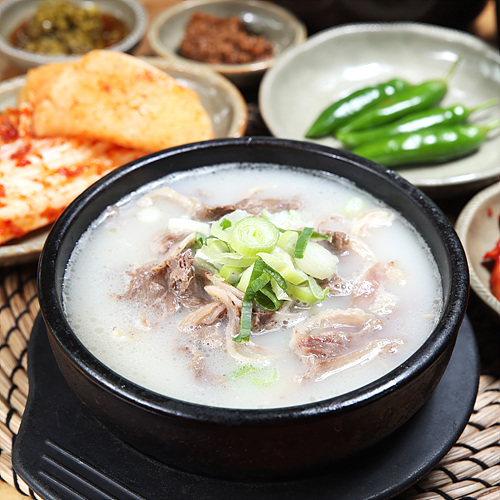

| 연령 | 인기레시피 | 대표사진 |
|---|---|---|
| 10대 | 엄청나게 매운 떡볶이. |
|
| 20대 | 요즘 유행하는 레시피. |
|
| 30대 | 숙취 해소가 필요한 직장인에게 안성맞춤! |
|
| 40대 | 자연의 맛이 느껴지는 레시피. |
|
| 50대 | 뼈에도 좋은 곰탕. |
 |
| 60대+ | 따뜻한데 건강하기까지 한 레시피 |
|
| 이 레시피들은 한 주동안 각 연령들이 가장 많이 추천한 레시피 입니다. | ||